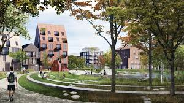

Introduction
Sustainable urban architecture,
Key Concepts
- Green Building Materials: The use of eco-friendly materials that reduce environmental impact.
- Energy Efficiency: Designs that minimize energy consumption through smart insulation and natural lighting.
Benefits
Sustainable architecture significantly impacts not just environmental health but also economic and social well-being. By prioritizing eco-friendly building materials and energy-efficient designs, sustainable architecture reduces resource consumption and minimizes pollution, leading to healthier ecosystems and cleaner air and water. Moreover, investing in sustainable construction creates jobs in green industries, stimulates local economies, and fosters innovation. Socially, sustainable buildings promote community well-being by providing comfortable, healthy spaces that enhance quality of life, encourage social interaction, and foster a sense of belonging and pride among residents. Overall, sustainable architecture serves as a catalyst for positive change, aligning environmental, economic, and social interests for a more resilient and equitable future.
Challenges
Despite its numerous benefits, sustainable architecture faces several obstacles, notably higher initial costs and regulatory hurdles. Implementing eco-friendly materials and energy-efficient technologies often requires upfront investments, which can deter developers and clients focused solely on short-term financial gains. Additionally, navigating complex regulatory frameworks and obtaining permits for innovative sustainable designs can be challenging and time-consuming, adding further barriers to adoption. Overcoming these obstacles necessitates collaboration between policymakers, industry stakeholders, and communities to incentivize sustainable practices, streamline approval processes, and offer financial support or incentives for sustainable development initiatives. By addressing these challenges, we can accelerate the transition towards more sustainable urban environments.
Inspirational Quote
"We shape our buildings; thereafter, they shape us."
Conclusion
sustainable architecture holds immense potential to transform urban landscapes into models of sustainability. By integrating green building materials, energy-efficient designs, and innovative technologies, sustainable architecture can mitigate environmental impacts, reduce carbon footprints, and enhance resilience to climate change in urban areas. Moreover, sustainable buildings can serve as educational and inspirational landmarks, showcasing the possibilities of environmentally conscious design to communities and future generations. As cities continue to grapple with pressing environmental and social challenges, embracing sustainable architecture offers a pathway towards creating vibrant, healthy, and equitable urban environments that prioritize the well-being of both people and the planet. Through collective effort and commitment to sustainable principles, we can realize the vision of sustainable cities that thrive in harmony with nature.